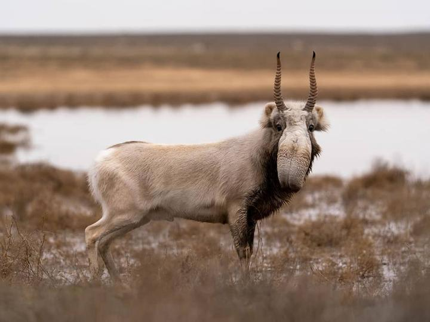
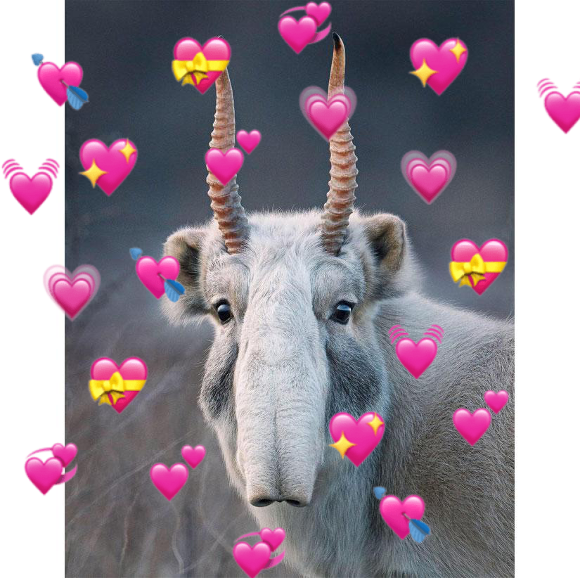

Saiga
The saiga antelope(Saiga tatarica), or saiga,
is a a critically endangered antelope which during antiquity inhabited a vast area of the Eurasian
steppe spanning the foothills of the Carpathian Mountains
in the northwest and Caucasus in the southwest into Mongolia in the northeast and
Dzungariat in the southeast.

Taxonomy
The scientific name Capra tatarica was coined by
Carl Linnaeus
in 1766 in the 12th edition of Systema Naturae. It was reclassified as
Saiga tatarica and is the sole living member of the genus Saiga.
Two subspecies are recognised:
- S. t. tatarica (Linnaeus, 1766): also known as the Russian saiga, it occurs in central Asia.
-
S. t. mongolica (Bannikov, 1946): also known as the Mongolian saiga, it
is sometimes treated as an independent species, or as subspecies of the Pleistocene
Saiga borealis; it is confined to Mongolia.
Reasons why I love them
- They are super cute.
- Their face looks so squishy and huggable.
- Their horns look like two big carrots.
- Even though they have been brought down to the brink of exitinction by an epizootic illnes
and the harshnesses of their habitat, they still persevere and keep striving
to return once again to their former days of glory when they were prolific. Admiring their valiant determination gives me
the strenght to continue on with my own endeavours.
